In addition to giving you the tools to create sophisticated Graphs, Cacti enables you to manage User and User Group access to those Graphs as well as various other areas of Cacti. Each User has a variety of settings and permissions. Some of these settings can be controlled by the individual User via editing their Profile, or controlled by the Cacti Administrator. A Users Cacti permissions are only modifiable by authorized Cacti Administrators.
Note: for a users to see new settings, they will have to log off and back in again to view.
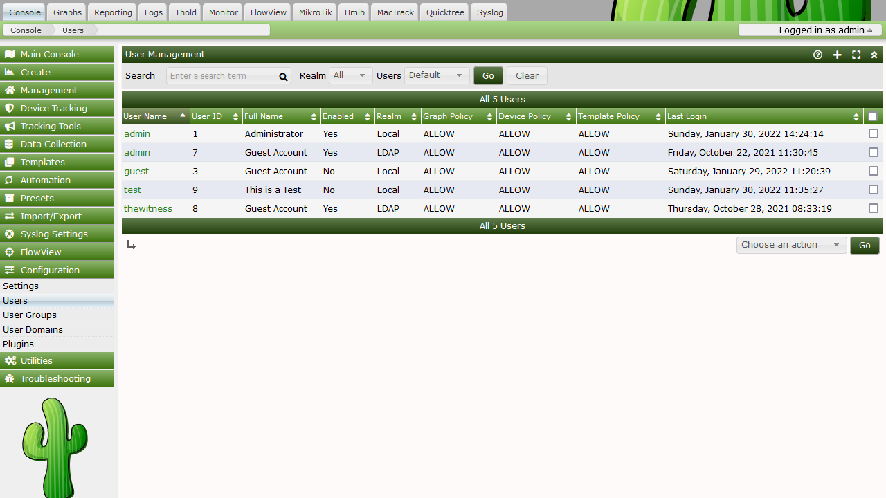
Out of the box, there are two users that come with every Cacti installation. The "admin" user - the main user that by default has access to see and change everything in Cacti. This is the user that you first login with in Cacti, and it is probably a good idea to keep around unless you know otherwise. The second user is the "guest" user, which controls which areas/graphs are allowed for unauthenticated users.
By default, this user only has rights to view, but not change graphs. This enables any unauthenticated user to visit 'graph_view.php' and view your graphs. This behavior can be changed by either changing the realm permissions for the "guest" user, or disabling the guest user altogether under Cacti Settings. By default in 0.8.7 and later, the "guest" user is not enabled, effectively disabling "guest" (Unauthenticated) access to Cacti.
To edit an existing user, select the User Management item under the Utilities heading on the Cacti menu. Once at the user management screen, click username of the user you wish to edit. You will see a screen that looks similar to the image below.
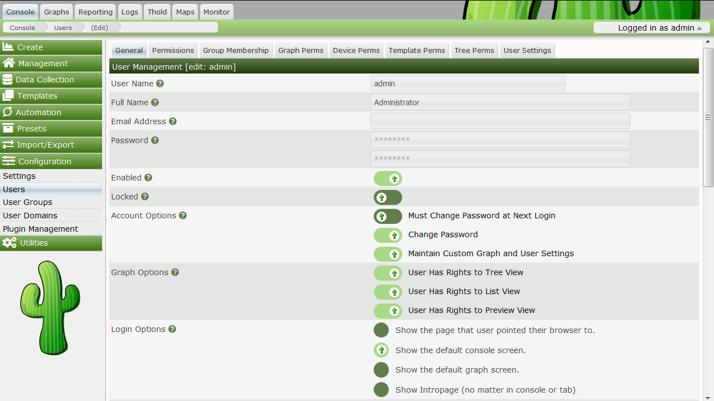
At minimum, you must specify a User Name and a Password for each user. Each user field is described in more detail below. In addition to these fields, each user can have their own realm permissions", graph permissions, and graph settings. Each of these items are described in this section of the manual.
User Name
This field contains the login name for the user. There are no character limits this field, but it would make sense to keep it to alphanumeric characters to maintain simplicity.
Full Name
(Optional) You can use this field as a more descriptive identifier for the user. It is currently only used for display on the user management page.
Password
Enter the password for the user twice, once in each text box. Keep in mind that passwords are case sensitive and the password will remain unchanged if the boxes are both left empty.
Account Options
There are two account related options that can be set for each user.
User Must Change Password at Next Login
Force a password change immediately after the user logs in.
Allow this User to Keep Custom Graph Settings
Allows user to maintain their own custom graph viewing settings.
Graph Options -
Enables certain defined graph viewing options.
User Has Rights to Tree View
User Has Rights to List View
User Has Rights to Preview View
Login Options
These options set what occurs after the user logs in.
Show the page that user pointed their browser to
Will point the user to whatever page they were heading to before being interrupted by the login page.
Show the default console screen
This option will always point the user to 'index.php' after a successful login.
Show the default graph screen
This option will point the user to default graph view after login.
Authentication Realm
This setting allows you to specify a user for use with Local, Web Basic or LDAP Authentication.
Note: Template users must be Local.
Realm permissions control which areas of Cacti a user can access. You can edit a user's realm permissions by selecting User Management and choosing the user you want to edit the permissions for. The Realm Permissions box will be displayed in the lower part of the screen. Each "realm" is a grouping that represents common tasks in Cacti, making it easier to fine tune each user's access.
If you want to create a user that can only view graphs, you should select the View Graphs realm and leave everything else unchecked. See the Graph Permissions section for more information about how to fine tune this even more on a per-graph basis. Conversely, if the user needs to access the console, they will need Console Access and any additional realms that you see fit.
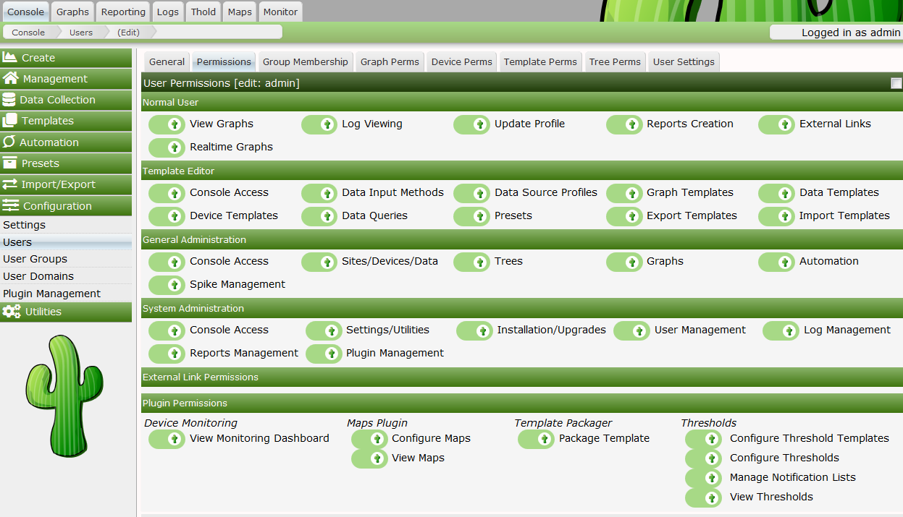
Graph Permissions control which graphs a user is allowed to view. However, in general, these permissions do not apply to editing graphs. You can edit a Users Graph Permissions either by assigning that User to one to many User Groups, or by modifying their Graph Permissions directly.
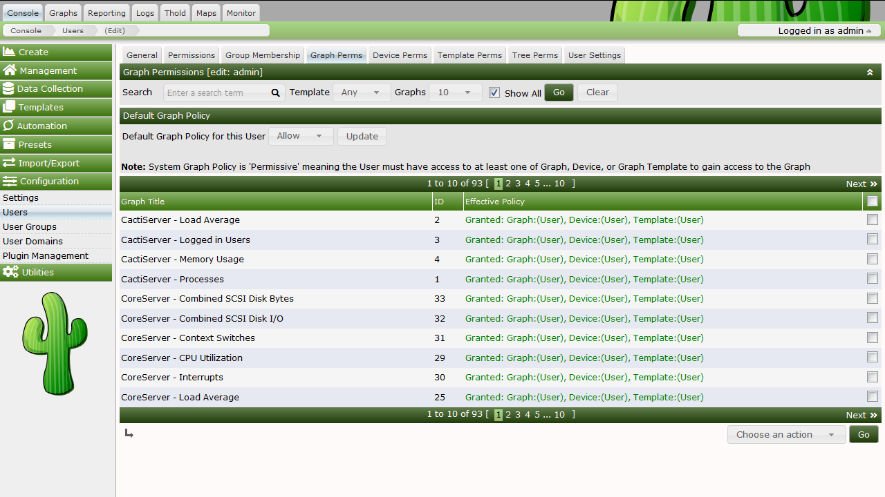
Cacti supports two Graph Permission models. There is the Permissive Graph permission which states that if a user has access either to the Graph, the Device or Graph Template, the user will have access to all the Graphs that match that class. For example, in the Permissive model, if you have access to the Device, you have access to all it's Graphs. If you have access to a Graph Template, you have access to every Device Graph that matches that Graph Template.
The second Graph Permission model is Restrictive. In the Restrictive Graph permission model, you must have access either to the Graph directly, or both the Device and Graph Template. Using this permission model requires the Users and User Groups have much more specific access if they want to gain access to various device Graphs.
We introduced these new permission models and administrative processes to simplify the Cacti permission system, and to increase it's usability.
In addition to the Permissive and Restrictive models, which can be set from Console > Configuration > Settings > General, a User or User Group is either Allowed or Denied all Graphs, Devices and Graph Templates through a setting called the Default Policy in each of the Permission Tabs. The Graph Permissions tab includes an Effective Policy, which combines all the Users various User Group and User permissions to provide an effective permission. If the Graph is ultimately permitted for the User to view, you will see for what reason from this Permission tab.
Note: even if a User is denied access to a Device or Graph Template, but has access to at least one Graph from that Device or Graph Template, they will see that Device or Graph Template name in areas of Cacti that display it.
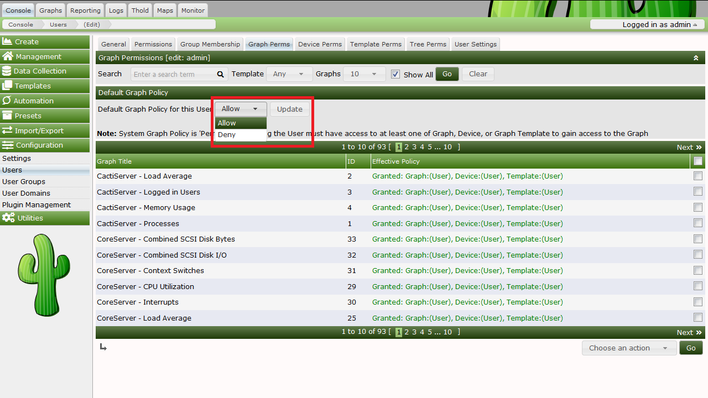
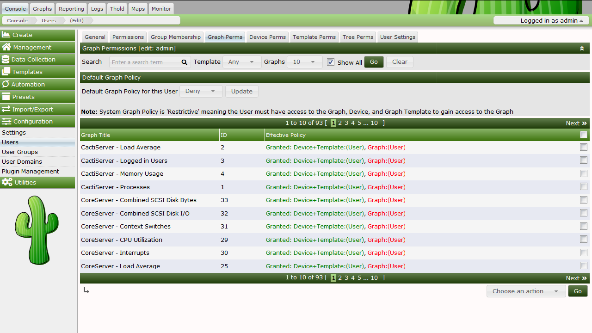
Device Permissions allow you to Grant or Revoke access to specific Devices. If you wish to Grant or Revoke access to a Device, you can select it, and then choose the specified action from the drop down, and press the Go button to make that permission change. As mentioned above, revoking Device access does not necessarily block a User from seeing that Device from the User Interface.
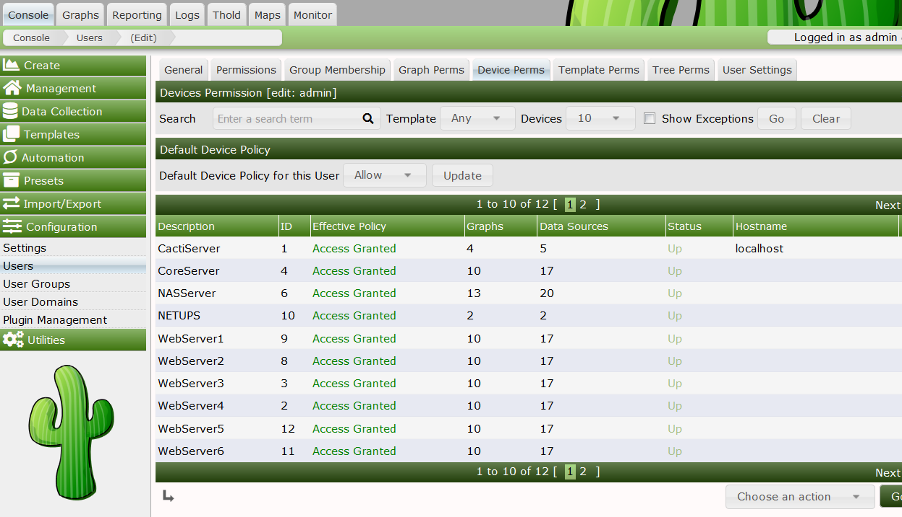
Template Permissions allow you to Grant or Revoke access to specific Graph Templates. If you wish to Grant or Revoke access to a Graph Template, you can select it, and then choose the specified action from the drop down, and press the Go button to make that permission change. As mentioned above, revoking Graph Template access does not necessarily block a User from seeing that Graph Template from the User Interface.
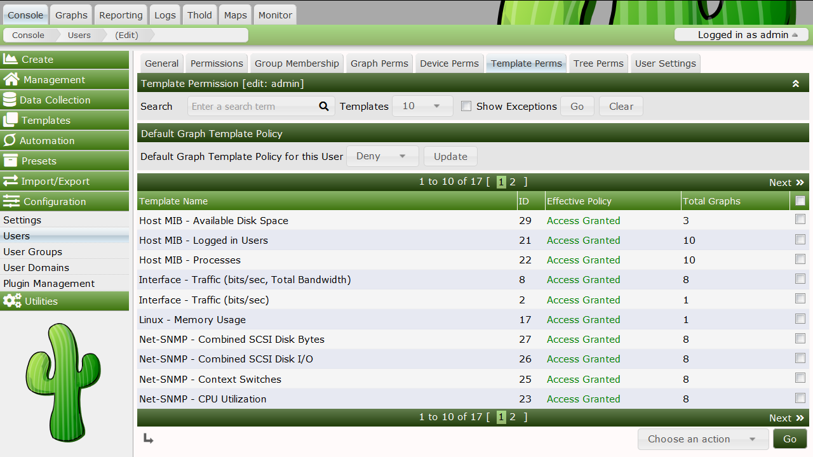
Cacti allows the Administrator to Grant and Revoke Tree permissions from this tab. The Cacti Tree permissions are a single level security object. However, when you browse a Tree to it's various branches, a user will only be allowed access to the Graphs and Devices that they have access to. Managing permissions to Trees is identical to Graphs, Devices and Graph Templates otherwise. Additionally, Cacti has will hide branches from a User when they have no access to any Devices or Graphs within it.
Cacti optionally allows Users to control certain User Settings such as their Email Address and Full Name. However, the Cacti Administrator also has the ability to view a Users settings and modify them for the User from the User Settings tab. This feature allows the Cacti Administrator to better support their Users. However, you can disable a Users ability to modify defaults from the General User Management tab. This is important for the guest account for example.
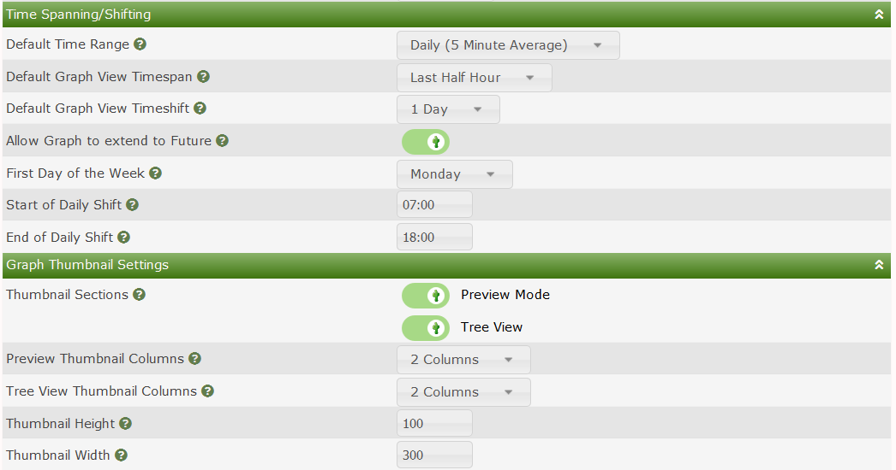
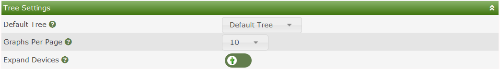
In order to increase Cacti User Interface performance, when a User first checks for their permissions after login to either Devices or Graph Templates those permissions are cached for their entire login session. If you change a Users Device or Graph Template permissions, they will not see those permission changes until their next login.
To create a new user, select the User Management item under the Utilities heading on the Cacti menu. Once at the user management screen, click the plus (+) glyph.
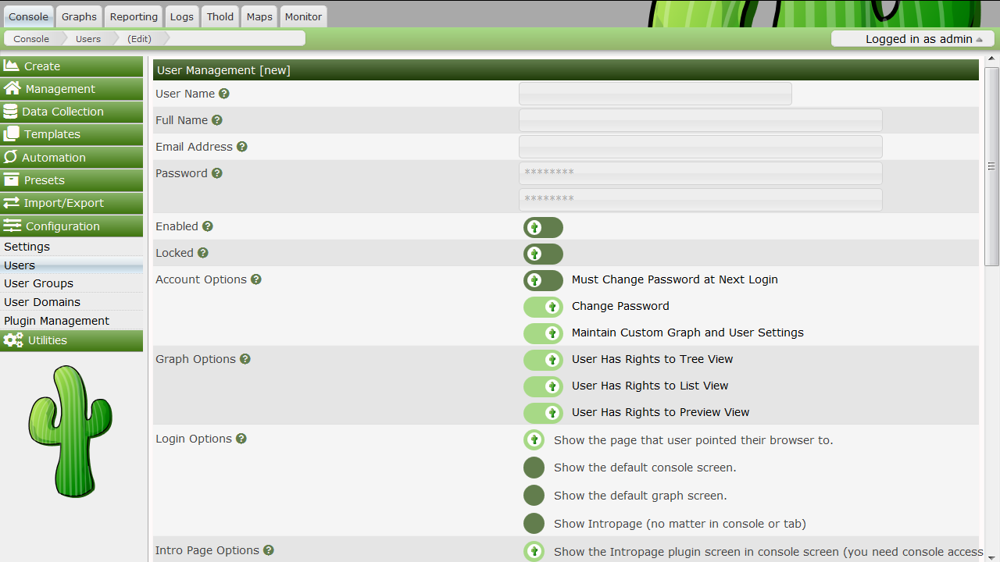
At minimum, you must specify a User Name, Password and Login Realm for each user. Each User field is self documented either below the field, or in the help bubble to the right of it. In addition to the fields on the General tab, settings can be controlled from the various sub-tabs when editing a user. Those sub tabs include:
From this sub-tab, you can modify general User attributes including Full Name, Email Address, Lockout status, Account Options, Graph Options, etc.
From this sub-tab, you control what areas of Cacti a User has access to. Cacti has broken those access areas into various Roles to make the setting of permissions easier to understand. Note that Plugin permissions are still grouped by Plugin in the current version of Cacti. This will change over the next few releases to be more in line with the various Cacti Roles.
From this sub-tab, you can assign or remove users from various User Groups.
From this sub-tab, you can view a users Effective Graph permissions and also Grant or Revoke access to Graphs for an individual User.
From this sub-tab, you can view and edit a users Device permissions. Note that removing a users permission to a Device can be overridden if they have access to either a Graph or, depending on the permission model you have chosen, a Devices Graph Template.
From this sub-tab, you can Grant or Revoke a Users access to various Cacti Graph Templates.
From this sub-tab, you can Grant or Revoke a Users access to the various Cacti Trees.
From this sub-tab, you can modify a Users settings to assist the User with their use of Cacti, or to set defaults for that User.
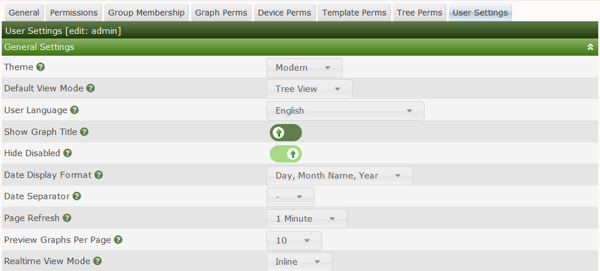
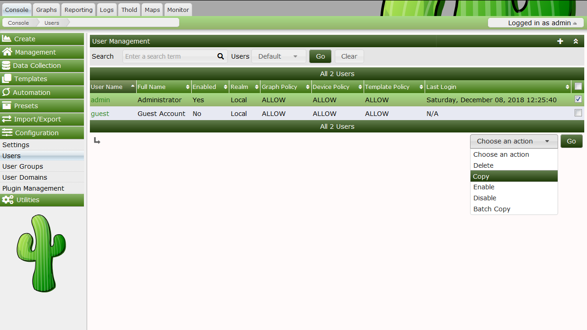
To copy a User to a new one, go to Console > Configuration > Users. Once at the Users interface, highlight the User you would like to copy from and select Copy from the Choose an action drop down selection box, click Go to continue. If you select multiple users, only the first selected User will be used as the source User.
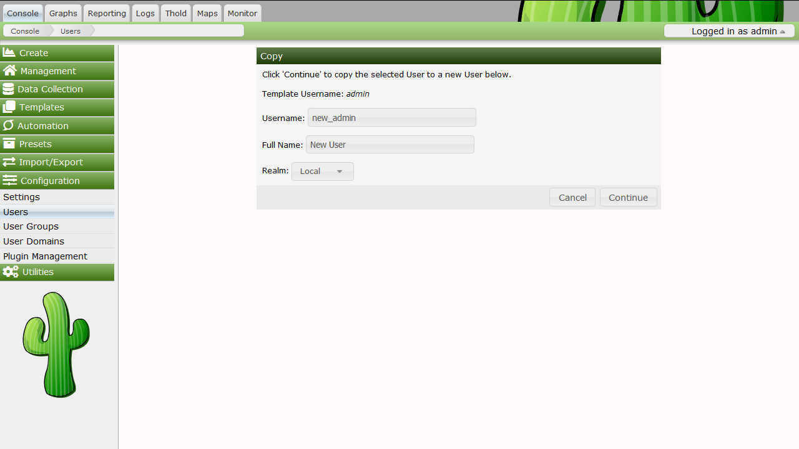
Specify the New Username, New Full Name and New Realm of the new user. Click Continue to copy the selected template user to the the designated new user. An error will be returned if you attempt to copy over an existing user. If you would like to copy over an existing user, use Batch Copy.
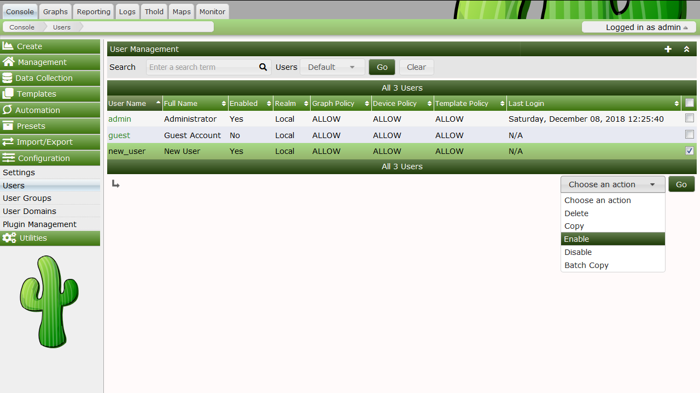
To enable or disable a set of or a single user, select the User Management item under the Utilities heading on the Cacti menu. Once at the Users interface, highlight the User you would like to Enable or Disable and select either Enable or Disable from the Choose an action drop down selection box, click Go to continue.
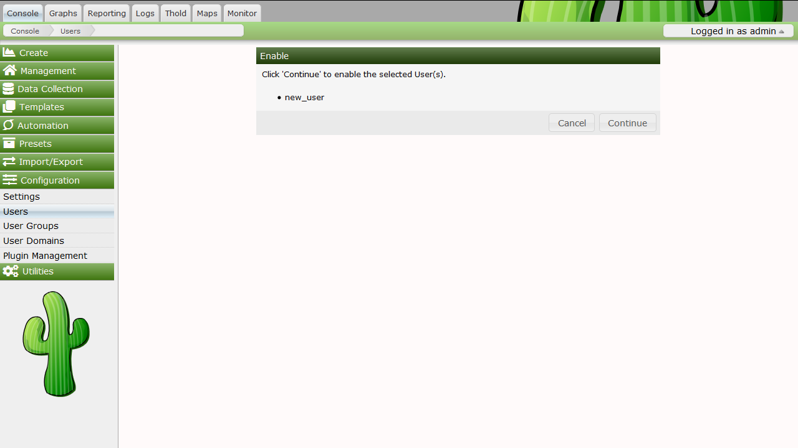
Confirm that you want to disable or enable the listed users. Click Continue to perform the action. Disabling your own account is not permitted.
Batch Copy is a helpful utility that helps Cacti Administrators maintain users. Because Cacti does not yet support groups, it is important that there is some way to mass update users. This what Batch Copy does for you.
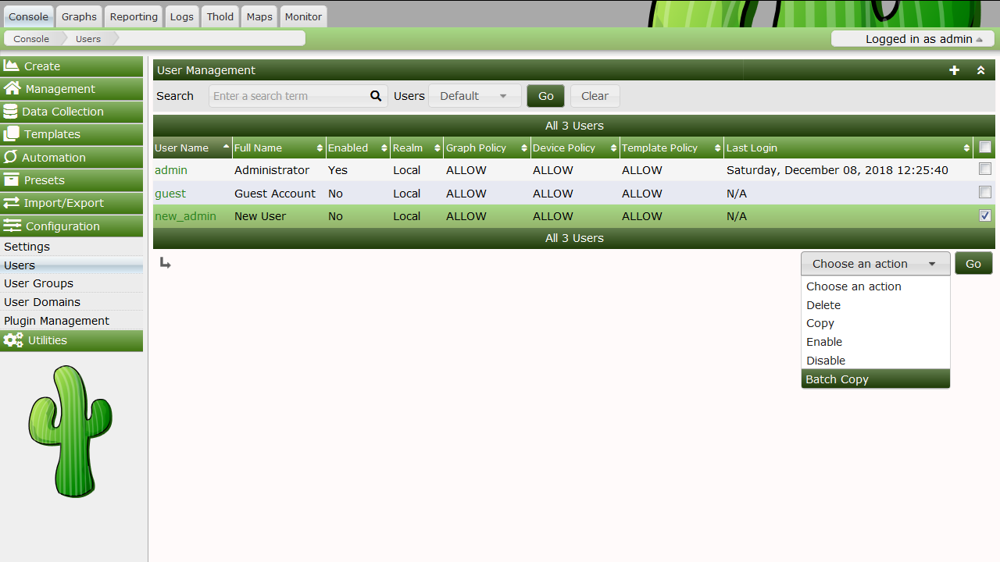
To Batch Copy a set of or a single user, select the Users interface under Console > Configuration. Once at the Users interface, highlight the Users you would like to batch copy information to and select Batch Copy from the Choose and action drop down selection box, click Go to continue.
Select the Template User and confirm that you want to Batch Copy the listed Users. Click Continue to perform the action.
It is important to note that when using Batch Copy the original Users Full Name, Password, Login Realm and Enable status will be retained, all other fields will be overwritten with values from the selected Template User.
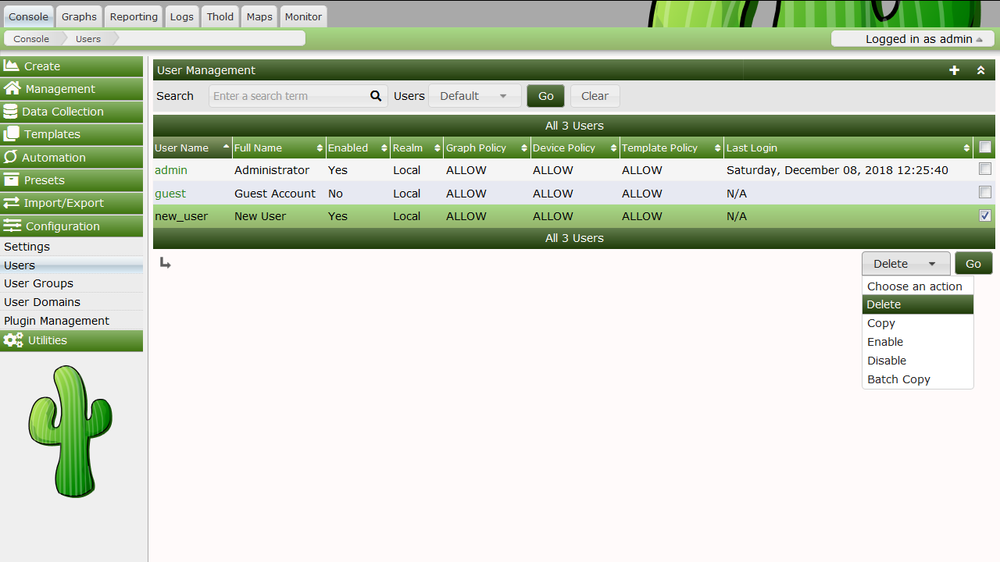
To delete a set of or a single User, highlight the Users from ****Console
Configuration > Users**** interface, then select
Deletefrom theChoose an actiondrop down selection box and pressGoto continue.
Confirm that you want to delete the listed users. Click Continue to perform the action. Deleting your own account is not permitted.
By default, Guest or Anonymous access is disabled in Cacti. Enabling "Guest" access is easy. But, you must understand that you should only allow the designated "Guest" user access to what you authorized. It is not suggested that you give the designated "Guest" user more than just access to graphs. To enable guest access, first, need a designated "Guest" user. Cacti by default comes with one already created that has access to only graphs.
It is important to note that the default guest user has access to all graphs on the system. Once you have created the "Guest" user, you need to tell Cacti what the "Guest" user is. This is done by updating the Authentication Settings and selecting the "Guest" user you have designated. The "Guest" user must be enabled and be set as the guest user for anonymous access to work.
Copyright (c) 2004-2024 The Cacti Group